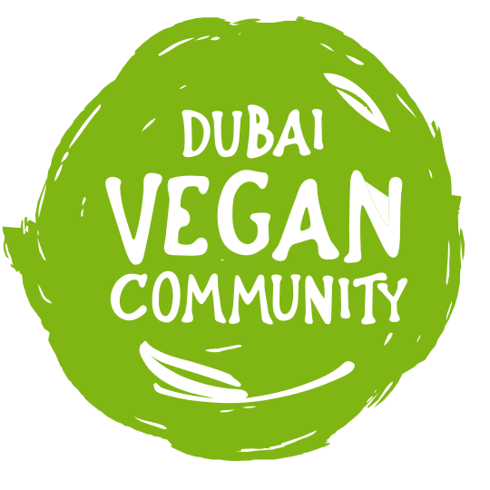
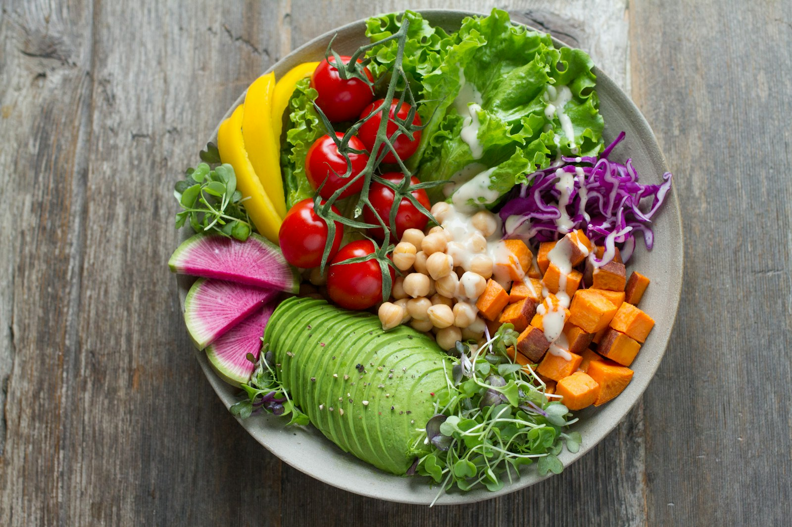
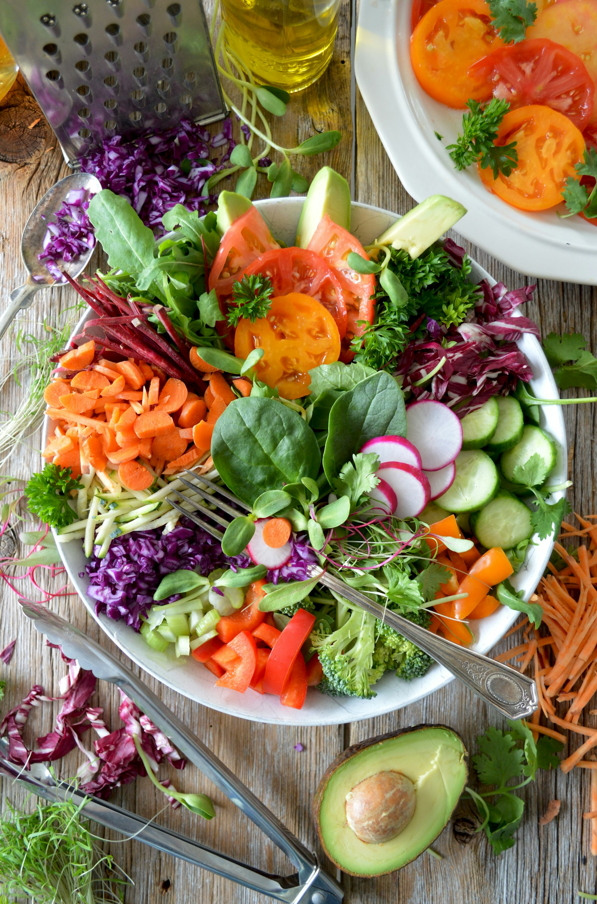

Eat somewhere vegan
Cafés, restaurants and the neighbourhood places people actually return to.

Join
Vegan food, gatherings
gatherings

and a community that feels close.A local guide to plant-based places, events and everyday choices across the UAE.
Explore the guideCafés, restaurants and the neighbourhood places people actually return to.
Markets, shared tables and walks. Pick one thing, or make a day of it.
Plain help for eating, shopping and choosing with a bit more confidence.
Stories, recipes and new plant-based businesses sit in the same guide. Add yours.